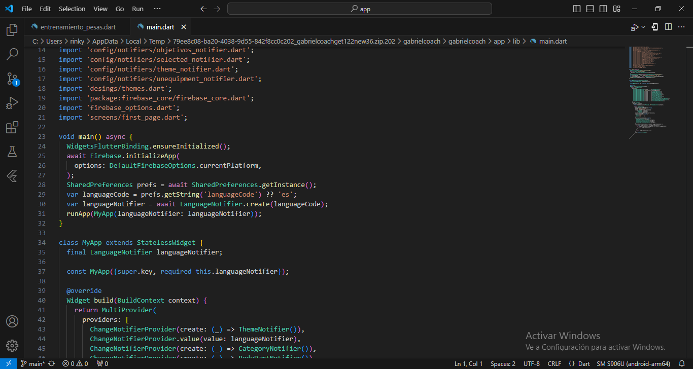

Gabriel Coach App
Entrenador Personal en tu Bolsillo
Esta página presenta la estructura del proyecto Gabriel Coach App. Es una app que utiliza Flutter, Firebase y otras dependencias para su funcionamiento.
Aquí encontrarás toda la información necesaria para conocer y realizar cambios en la app, como modificar nombres, imágenes, videos, tipos de letra, agregar nuevas funciones, entre otros.
Requisitos
Versiones y Software Recomendado
Este proyecto utiliza Flutter versión 3.2.3 y Dart versión >=3.2.3 <4.0.0.
Para el desarrollo o edición de la app, puedes usar cualquier IDE como Visual Studio Code o Android Studio. Este proyecto se creó con Visual Studio Code, por lo que se recomienda utilizarlo como editor de código, aunque puedes usar el que prefieras.
Introducción al Proyecto
Estructura Inicial
Cuando descargues el proyecto Gabriel Coach, lo encontrarás comprimido en un archivo ZIP. Al descomprimirlo, verás un archivo HTML llamado leeme.html y dos carpetas. Una de esas carpetas, leeme, contiene los recursos utilizados por el archivo HTML, como imágenes y scripts, por lo que no es necesario hacer nada con ella.
La carpeta principal del proyecto se llama gabrielcoach. Esta carpeta es clave, ya que contiene todos los archivos y carpetas necesarias para el desarrollo de la aplicación.
Estructura de la Carpeta gabrielcoach
Dentro de gabrielcoach, encontrarás dos subcarpetas:
- .idea: Esta carpeta está relacionada con configuraciones internas de tu IDE, por lo que no es necesario modificarla.
- app: Esta es la carpeta más importante, ya que contiene todo el código fuente y recursos de la aplicación Gabriel Coach. Aquí es donde encontrarás el archivo pubspec.yaml, el archivo main.dart y las demás carpetas mencionadas a lo largo de esta documentación.
Para empezar a trabajar en el proyecto, dirígete a la carpeta app, que es el núcleo del desarrollo.
Archivo pubspec
Definición y Dependencias
El archivo pubspec.yaml es fundamental en cualquier proyecto Flutter. Aquí se define el nombre del proyecto, su versión, las dependencias necesarias, y otros recursos importantes como los assets y las fuentes que utilizará la app.
En este archivo, las fuentes personalizadas se encuentran en la carpeta assets/fonts, como por ejemplo Montserrat-Bold y Montserrat-Medium, que dan un estilo elegante a la app. Las imágenes están organizadas en la carpeta assets/images.
En cuanto a las dependencias, se incluyen varias importantes:
- firebase_auth: Maneja la autenticación de usuarios.
- cloud_firestore: Utilizado para almacenar y recuperar datos de Firestore.
- shared_preferences: Permite guardar información localmente en el dispositivo.
- provider: Gestión del estado de la app.
Cambio del Nombre del Paquete
Utilizando el Plugin change_app_package_name
El plugin change_app_package_name se utiliza para cambiar el nombre del paquete en proyectos Flutter de manera sencilla. Cambiar el nombre del paquete es importante cuando quieres lanzar tu app en las tiendas de aplicaciones, ya que debe tener un identificador único tanto en Android como en iOS.
Para cambiar el nombre del paquete, primero debes añadir el plugin al archivo pubspec.yaml:
dependencies:
change_app_package_name: ^1.4.0Luego, ejecuta el siguiente comando para cambiar el nombre del paquete:
dart run change_app_package_name:main com.nuevo.nombre.paquetePuedes cambiar el nombre del paquete para Android e iOS simultáneamente o por separado utilizando las siguientes opciones:
- Cambiar solo Android:
--android - Cambiar solo iOS:
--ios
Es importante asegurarte de que el nombre del paquete sea único para evitar conflictos con otras aplicaciones. Puedes encontrar más información sobre este plugin en su página oficial: change_app_package_name.
Archivo main
Función Principal de la App
El archivo main.dart es el punto de entrada de la aplicación Flutter. Es aquí donde se inicializan las dependencias clave como Firebase, que proporciona autenticación y almacenamiento en la nube a través de Firebase Auth y Firestore.
También se maneja la configuración del idioma de la app usando AppLocalization, lo cual permite tener la app en varios idiomas. SharedPreferences es utilizado para guardar ajustes como el idioma y el tema (oscuro o claro) seleccionados por el usuario, utilizando Provider para gestionar el estado global de la app.
Estructura y Carpetas
Organización del Proyecto
El proyecto está organizado de la siguiente manera:
- assets: Aquí se almacenan imágenes, tipos de letra, iconos, modelos 3D, y archivos de traducción.
- android: Contiene los archivos de configuración específicos para la plataforma Android.
- ios: Contiene los archivos de configuración específicos para la plataforma iOS.
- lib: Esta es la carpeta principal donde se almacenan todos los archivos
esenciales de la aplicación, a continuacion una lista de carpetas dentro de lib.
- backend: Contiene archivos y carpetas para el lado administrador del sistema.
- config: Archivos de configuraciones importantes.
- designs: Archivos relacionados con el diseño de la aplicación.
- functions: Archivos de funciones reutilizables.
- screens: Carpeta que contiene todas las pantallas y sus archivos.
- widgets: Widgets reutilizables que se utilizan en diferentes partes de la app.
- main.dart: Archivo principal de la aplicación.
- firebase_options.dart: Archivo de configuración para Firebase.
Carpeta assets
Archivos y Organización
La carpeta assets contiene todos los recursos estáticos como imágenes, fuentes, iconos, archivos de traducción y modelos 3D utilizados en la aplicación. Para agregar nuevos archivos o carpetas en esta sección, simplemente se deben colocar en la carpeta assets y registrar su ubicación en el archivo pubspec.yaml.
- fonts: Esta carpeta almacena todos los tipos de letras disponibles en la aplicación. Para agregar un nuevo tipo de letra, simplemente descárguelo, colóquelo en esta carpeta y agregue la información en el archivo pubspec.yaml para que esté disponible en la app.
- gif: Aquí se almacenan las imágenes en formato GIF. Para agregar nuevas imágenes GIF, colóquelas en esta carpeta y registre la información en el archivo pubspec.yaml.
- icon: En esta carpeta se encuentran los iconos utilizados en la aplicación. Para añadir nuevos iconos, siga el mismo procedimiento: colóquelos en esta carpeta y actualice el archivo pubspec.yaml.
- images: Aquí se guardan todas las imágenes generales de la aplicación. Para añadir más imágenes, insértelos en esta carpeta y actualice el archivo pubspec.yaml.
- lang: Esta carpeta contiene los archivos de traducción es.json y en.json, que almacenan las traducciones en español e inglés, respectivamente. Para añadir nuevas traducciones, modifique estos archivos. Si desea agregar un nuevo idioma, cree un nuevo archivo JSON, agréguelo en esta carpeta, regístrelo en el archivo pubspec.yaml y configure el idioma en el archivo main.dart.
- tre_den: En esta carpeta se almacenan todos los modelos 3D utilizados en la aplicación. Para agregar nuevos modelos, siga el mismo proceso: colóquelos en esta carpeta y actualice el archivo pubspec.yaml.
Carpeta backend
Sección de Administración
La carpeta backend, ubicada dentro de lib, contiene todas las pantallas y funcionalidades relacionadas con la administración del sistema. Aquí se gestionan diversas operaciones como agregar ejercicios, entradas, páginas, contenidos, recetas, deportes, entre otros elementos de la aplicación.
- admin: Dentro de esta carpeta se encuentran los archivos y widgets correspondientes a la pantalla principal de administración, la barra superior y la barra inferior.
- admin_start_screen.dart: Este archivo establece la primera pantalla que se ve en la sección de administración y define las 5 pantallas a las que se puede acceder desde los botones de la barra inferior. Aquí se gestiona la navegación inicial y la configuración principal del administrador.
- widgets: Esta carpeta contiene dos archivos importantes que estructuran el diseño y la funcionalidad de la sección de administración.
- admin_main_screen_layout.dart: Archivo que organiza el diseño principal de la pantalla de administración.
- admin_custom_drawer.dart: Este archivo contiene toda la configuración de la barra lateral (drawer). Desde aquí, se pueden agregar nuevos elementos al menú lateral o editar los existentes. Este archivo trabaja en conjunto con otros archivos mencionados anteriormente y no se recomienda modificar su estructura sin entender bien su funcionamiento.
Carpeta config
Archivos de Configuración
La carpeta config dentro de lib contiene los archivos clave para la configuración de la aplicación. Aquí se almacenan archivos relacionados con la personalización de traducciones, notificaciones, colores, y validaciones, entre otros aspectos importantes.
- lang: Esta carpeta contiene el archivo app_localization.dart, el cual maneja todas las configuraciones de traducción de la aplicación. Para agregar nuevos idiomas, es necesario editar este archivo y asegurarse de que la información del nuevo idioma se cargue correctamente en el sistema.
- notifiers: En esta carpeta se almacenan todos los archivos de configuración para los notifiers que se utilizan en la aplicación. Estos notifiers gestionan el estado y las notificaciones internas, ayudando a que la app responda correctamente a eventos y cambios.
- utils: Aquí se encuentran dos archivos importantes:
- appcolors.dart: Archivo donde se definen todos los colores usados en la aplicación. Si es necesario cambiar el esquema de colores, este es el archivo que se debe editar.
- utils_snackbar.dart: Widget reutilizable que gestiona las snackbars en la aplicación. Este archivo define cómo se muestran las notificaciones emergentes en la app.
- validator: En esta carpeta se encuentran los archivos que manejan las validaciones realizadas en la pantalla de registro, asegurando que los datos ingresados por el usuario cumplan con los criterios establecidos antes de ser enviados o procesados.
Carpeta designs
Archivos de Diseño y Tema
La carpeta designs dentro de lib almacena todos los archivos relacionados con el diseño y la configuración del tema visual de la aplicación. Esta carpeta es esencial para definir la apariencia y la experiencia de usuario dentro de la app.
- themes.dart: Este archivo contiene todas las configuraciones relacionadas con el diseño de la app. Aquí se definen los tamaños de los textos, los colores, los tipos de letra, y otros aspectos visuales de la interfaz.
- Diseño general: En este archivo también se configuran elementos específicos como los dropdowns, scaffold, listviews, y otros componentes relacionados con el diseño general de la app.
Carpeta functions
Funciones de Administración y Usuarios
La carpeta functions dentro de lib almacena todos los archivos de funciones que se utilizan tanto para la administración (backend) como para el uso general de los usuarios (frontend). Esta carpeta es esencial para el funcionamiento de las diversas tareas que realiza la aplicación.
- Estructura organizada: La mayoría de los archivos están organizados en carpetas específicas para facilitar la localización y el trabajo con el archivo correcto.
- Archivos genéricos: Algunos archivos no se encuentran en carpetas porque son funciones genéricas o no requieren ser utilizadas en muchos códigos.
- Funciones específicas: Existen funciones para realizar tareas como subir imágenes, revisar roles de usuario, publicar contenido, visualizar información y mucho más, abarcando tanto el lado administrativo como el de los usuarios.
Carpeta screens
Pantallas de los Usuarios (Frontend)
La carpeta screens dentro de lib almacena todos los archivos de las pantallas del lado de los usuarios, también conocido como frontend. Aquí se definen todas las interfaces con las que los usuarios interactúan en la aplicación.
- Estructura organizada: La mayoría de los archivos están organizados en carpetas específicas, cada una con un nombre que identifica claramente la pantalla o el módulo que contiene, lo que facilita el acceso y la modificación de estos archivos.
- Archivos clave: Los archivos que no están en carpetas son sumamente importantes para el funcionamiento general de la app. Estos están identificados claramente para facilitar su reconocimiento y edición en caso de que sea necesario hacer ajustes críticos.
Carpeta widgets
Widgets Reutilizables
La carpeta widgets dentro de lib contiene todos los archivos relacionados con widgets reutilizables que se utilizan en diferentes partes de la aplicación. Estos widgets son componentes de interfaz que ayudan a construir las pantallas de manera modular y eficiente.
- Carpeta grid_view: Dentro de widgets, se encuentra la carpeta grid_view que almacena todos los tipos de grid que se utilizan en la aplicación, permitiendo diferentes disposiciones de elementos en cuadrícula.
- Archivos importantes: Al igual que en la carpeta backend, en esta carpeta también se encuentran dos archivos clave para la barra superior, barra inferior y el drawer (barra lateral). Estos archivos son reutilizados en varias pantallas para garantizar un diseño y funcionalidad consistentes en toda la app.
- Otros archivos: Además, hay una variedad de archivos que no están en carpetas específicas, pero que contienen widgets como appbars (barras de aplicaciones), decoraciones, gráficos (charts), entre otros. Estos componentes se utilizan de manera recurrente en la aplicación para mejorar la experiencia visual y la navegación.